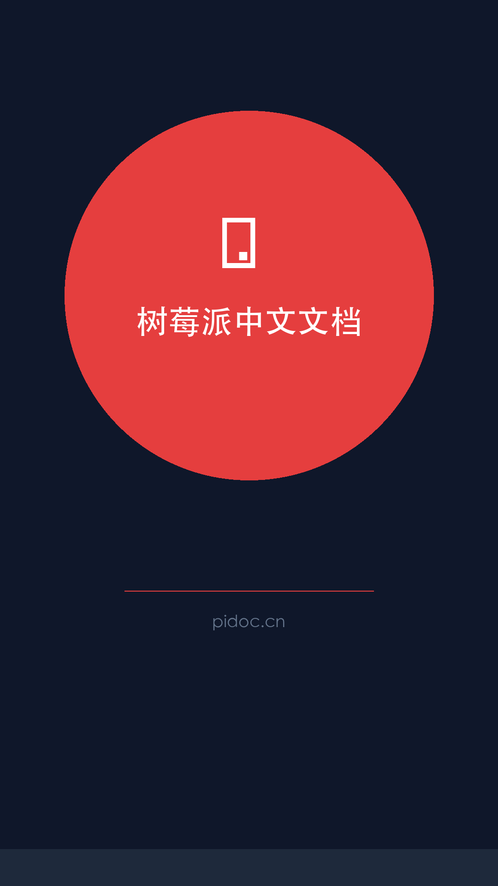

Raspberry Pi 官方文档的中文翻译与本地化版本
基于官方英文文档适当本地化，确保内容准确完整
基于 Docusaurus 构建，提供现代化的文档浏览体验
一行命令安装依赖，快速搭建本地开发环境
支持一键部署到 GitHub Pages，方便分享和访问
开发与部署脚本
本地开发 / 生成构建 / 本地预览 / GitHub Pages 部署
如何贡献
Fork → 新建分支 → 编辑文档 → 提交 PR
Fork 仓库到个人账号
创建新分支进行修改
修改或添加文档内容
提交 Pull Request
将树莓派中文文档仓库克隆到本地
运行 npm install 安装项目依赖
运行 npm start 启动本地开发服务器
运行 npm run build 生成静态文件，npm run deploy 部署到 GitHub Pages
如果遇到依赖安装问题，请确保 Node.js 版本符合要求，推荐使用 Node.js 16+。
寻找中文文档参考的树莓派用户
需要树莓派开发文档的开发者
使用树莓派进行教育教学的教师